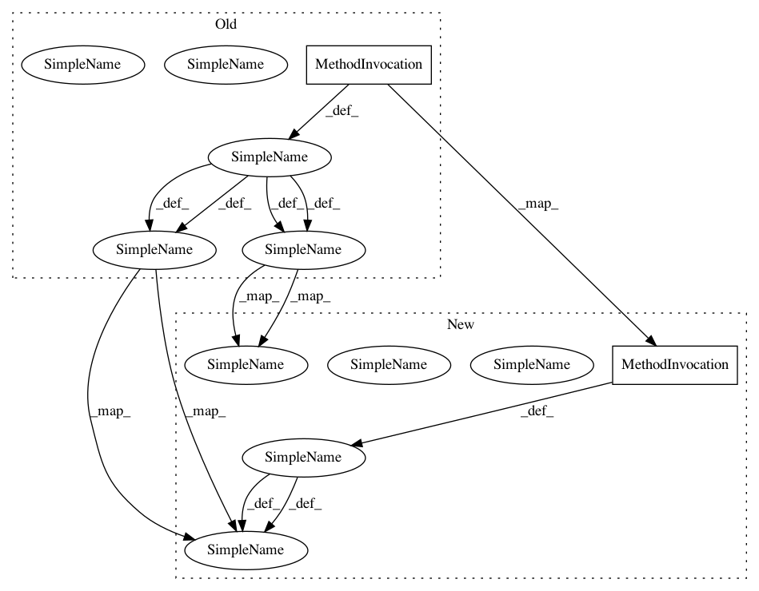

382471c62800d7c80673ef22552b6460124ccc2d,lightning/impl/primal_cd.py,CDClassifier,fit,#CDClassifier#,223
Before Change
elif self.penalty in ("l1", "l2", "nn"):
penalty = self._get_penalty()
for k in xrange(n_vectors):
n_pos = np.sum(Y[:, k] == 1)
n_neg = n_samples - n_pos
tol = self.tol * max(min(n_pos, n_neg), 1) / n_samples
vinit = self.violation_init_.get(k, 0) * self.C / self.C_init
viol = _primal_cd(self, self.coef_, self.errors_,
ds, y, Y, k, False,
indices, penalty, self._get_loss(),
After Change
elif self.penalty in ("l1", "l2", "nn"):
penalty = self._get_penalty()
n_pos = np.asarray([np.sum(Y[:, k] == 1) for k in xrange(n_vectors)])
n_neg = n_samples - n_pos
tol = self.tol * np.maximum(np.minimum(n_pos, n_neg), 1) / n_samples
vinit = np.asarray([self.violation_init_.get(k, 0)
for k in xrange(n_vectors)]) * self.C / self.C_init
jobs = (delayed(_primal_cd)(self, self.coef_, self.errors_,
In pattern: SUPERPATTERN
Frequency: 1
Non-data size: 2
Instances
Project Name: scikit-learn-contrib/lightning
Commit Name: 382471c62800d7c80673ef22552b6460124ccc2d
Time: 2014-10-06
Author: manojkumarsivaraj334@gmail.com
File Name: lightning/impl/primal_cd.py
Class Name: CDClassifier
Method Name: fit